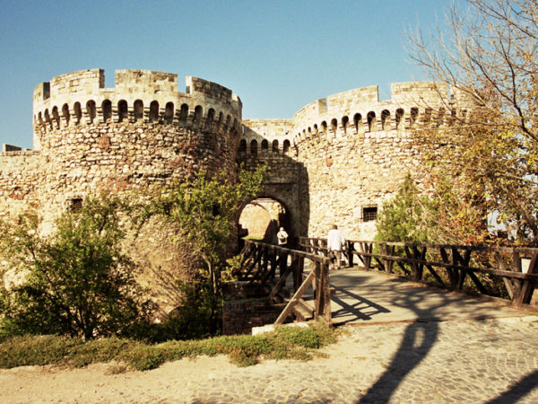
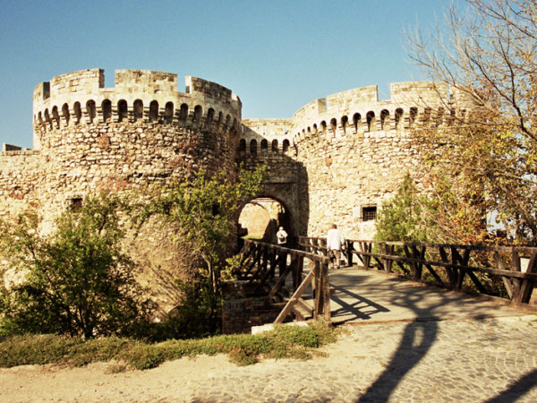

Historia
Belgrad należy do najstarszych miast Europy. Jego długa i burzliwa historia sięga wstecz ponad 7000 lat. Ziemie między Sawą i Dunajem były zamieszkiwane jeszcze w paleolicie. Odkryte podczas prac archeologicznych w jaskini kamieniołomu Lesztanah w dzielnicy Czukarica liczne szczątki ludzkie (takie jak kości i czaszki neandertalczyków) pochodzą z początków paleolitu.
Pozostałości kultury z okresu późnego kamienia łupanego znaleziono w Vinczy, Czukaricy, na Żarkowie i w okolicach ujścia rzeki Sawy do Dunaju. Wskazuje to na to, że okolice Belgradu zamieszkiwane były przez liczne plemiona z epoki kamienia. Potwierdzają to odkrycia archeologiczne.
Wiele miast satelickich Belgradu powstało na miejscu prehistorycznych osad. Zlokalizowane w tym miejscu celtyckie osady plemienia Skordysków - Singidun (współcześnie na osiedlu Karaburma na prawym brzegu Dunaju w dzielnicy Palilula) i Taurunum (współcześnie dzielnica Zemun) - datuje się na III wiek p.n.e. W czasach rzymskich pierwsza z nich, pod nazwą Singidunum, było ważne ze względów strategicznych.
Pod nazwą Belgrad miasto było znane dopiero od IX wieku. W 1521 należący wtedy do Węgier Belgrad został zdobyty przez Turków i, poza krótką przerwą, gdy w latach 1718–1739 był posiadłością Habsburgów Austriackich, pozostawał w ich władaniu do 1878. Wtedy stał się stolicą niepodległej Serbii.
Od 1878 jest stolicą Serbii. Po wybuchu I wojny światowej stolicę kraju przeniesiono do Niszu na południu kraju. Uczyniono to ze względów bezpieczeństwa – w tamtym okresie stolica kraju leżała tuż przy austriackiej granicy, biegnącej na Dunaju i Sawie (do Austro-Węgier należało miasto Zemun, dzisiaj część Belgradu). Niecały miesiąc po wybuchu konfliktu Belgrad był już okupowany przez inwazyjne siły Austro-Węgier i Niemiec. W 1918 stolica ponownie wróciła do Belgradu. W latach 1918–1929 był stolicą Królestwa SHS, w latach 1929–1941 Jugosławii. W pierwszym dniu niemieckiej inwazji na Jugosławię, 6 kwietnia 1941 roku Belgrad został czterokrotnie zbombardowany przez ponad 230 bombowców. Miasto zostało w dużym stopniu zniszczone, a tysiące ludzi straciło życie. Miasto zostało wyzwolone 20 października 1944 roku przez Armię Czerwoną i partyzantów Tity. W okresie powojennym Belgrad stał się ponownie stolicą Jugosławii. W latach 2003–2006 Serbii i Czarnogóry, od czerwca 2006 – Republiki Serbii.
Zobacz więcej na temat historii miasta

Kalemegdan - twierdza nad Sawą
Belgrad należy do najstarszych miast Europy. Jego długa i burzliwa historia sięga wstecz ponad 7000 lat. Ziemie między Sawą i Dunajem były zamieszkiwane jeszcze w paleolicie. Odkryte podczas prac archeologicznych w jaskini kamieniołomu Lesztanah w dzielnicy Czukarica liczne szczątki ludzkie (takie jak kości i czaszki neandertalczyków) pochodzą z początków paleolitu.
Pozostałości kultury z okresu późnego kamienia łupanego znaleziono w Vinczy, Czukaricy, na Żarkowie i w okolicach ujścia rzeki Sawy do Dunaju. Wskazuje to na to, że okolice Belgradu zamieszkiwane były przez liczne plemiona z epoki kamienia. Potwierdzają to odkrycia archeologiczne.
Wiele miast satelickich Belgradu powstało na miejscu prehistorycznych osad. Zlokalizowane w tym miejscu celtyckie osady plemienia Skordysków - Singidun (współcześnie na osiedlu Karaburma na prawym brzegu Dunaju w dzielnicy Palilula) i Taurunum (współcześnie dzielnica Zemun) - datuje się na III wiek p.n.e. W czasach rzymskich pierwsza z nich, pod nazwą Singidunum, było ważne ze względów strategicznych.
Pod nazwą Belgrad miasto było znane dopiero od IX wieku. W 1521 należący wtedy do Węgier Belgrad został zdobyty przez Turków i, poza krótką przerwą, gdy w latach 1718–1739 był posiadłością Habsburgów Austriackich, pozostawał w ich władaniu do 1878. Wtedy stał się stolicą niepodległej Serbii.
Od 1878 jest stolicą Serbii. Po wybuchu I wojny światowej stolicę kraju przeniesiono do Niszu na południu kraju. Uczyniono to ze względów bezpieczeństwa – w tamtym okresie stolica kraju leżała tuż przy austriackiej granicy, biegnącej na Dunaju i Sawie (do Austro-Węgier należało miasto Zemun, dzisiaj część Belgradu). Niecały miesiąc po wybuchu konfliktu Belgrad był już okupowany przez inwazyjne siły Austro-Węgier i Niemiec. W 1918 stolica ponownie wróciła do Belgradu. W latach 1918–1929 był stolicą Królestwa SHS, w latach 1929–1941 Jugosławii. W pierwszym dniu niemieckiej inwazji na Jugosławię, 6 kwietnia 1941 roku Belgrad został czterokrotnie zbombardowany przez ponad 230 bombowców. Miasto zostało w dużym stopniu zniszczone, a tysiące ludzi straciło życie. Miasto zostało wyzwolone 20 października 1944 roku przez Armię Czerwoną i partyzantów Tity. W okresie powojennym Belgrad stał się ponownie stolicą Jugosławii. W latach 2003–2006 Serbii i Czarnogóry, od czerwca 2006 – Republiki Serbii.
Zobacz więcej na temat historii miasta

{kind=link}
Kalemegdan - twierdza nad Sawą